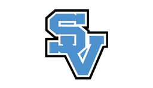

Try a paper network
Draw two devices and a switch. Trace a message from one device to the other. Add a router and an outside network. Trace a message that leaves your network.
Talk: Does every message need the internet?

CIRC HQGrades 5 + 6 · Make + test + explainConnect the dots · Student page 1 of 2
I can explain a small network, put eight wires in order, and use a test to improve my work.
A network connects devices so they can share data. The internet connects many networks. A small network can work without the internet.
Draw two devices and a switch. Trace a message from one device to the other. Add a router and an outside network. Trace a message that leaves your network.
Talk: Does every message need the internet?
A short Ethernet cable with an RJ45 plug on each end. Inside are four twisted pairs: eight wires in all.
Our cable stays on the table. We test it with a separate battery-powered cable tester.
Work with up to four people. Move jobs one place after each end or test. In a smaller group, share jobs. Everyone arranges wires, reads a check and explains a result. Ask for help with grip or close-up work.
Wait for the demonstration and approval before crimping. Keep fingers clear of blades and the crimp opening. Use only the loose practice cable. Never plug it into a wall jack, school device, switch, router or PoE equipment.
Student page 2 of 2
Use T568B at both ends. A plug goes on only once. Check before you crimp.
Look down at the gold contacts. The clip is underneath. Cable comes toward you. Read left to right, 1 to 8. Do not flip the plug when comparing it with this picture.
□ Both ends match T568B.
□ Eight positions light in matching order.
□ Jackets are held; tips are flush.
□ I can explain what I checked.
Record what happened. Check the colors and the plug first. Ask before cutting off a bad end. Use a new plug for the repair, then test again. A useful failed test is learning.
A basic tester checks connections. It does not prove internet access, speed or every wiring fault. The teacher also inspects the pairs and both plugs. On our unshielded cable, a ground or shield light may stay off.
Teacher page 1 of 2
Two 35-minute visits per class. Repeat each visit across the five-day rotation before the same class returns. Keep the current annual playbook position unchanged.
Start with two short cables per table, one per pair in a group of four. Each cable uses two new plugs and up to two boots. For seven tables, that is 14 cables, 28 plugs and 28 boots, plus repair stock. Give each student an end-building turn where practical; record a turn still needed instead of rushing.
Example stock math, not a full-year promise: 350 plugs make at most 175 two-ended cables before mistakes. 200 ft of cable yields at most 100 two-foot blanks before trimming. Cable is the limit in that example. Crimpers, testers, boots and successful practice cables can be reused; used crimp plugs cannot. Scale cable and spare plugs to the actual number of classes and individual turns.
| Minutes | Visit 1: understand + build | Visit 2: finish + troubleshoot |
|---|---|---|
| 0-5 | Sketch a local network. Trace a message. Name switch vs router. | Recall the route. Retrieve coded work and rotate jobs. |
| 5-11 | Demonstrate plug view, T568B, safe preparation and check-before-crimp. | Model two full tester runs. Compare a checked cable with a prepared fault. |
| 11-26 | Pairs build. Students sort/check; teacher circulates for approval. Record unfinished ends. | Finish, inspect and test. Log one observation, repair with a new plug if needed, and retest. |
| 26-31 | Explain one check. Label cable A/B and save actual progress. | Each student explains a network path and their own test observation. |
| 31-35 | Tools counted; wire scraps collected; work stored by class/table code. | Tester off; battery/tools checked; successful cables kept for future lessons. |
Students explain a local connection, follow the correct pair order, and use evidence to keep or change their work. A wire-map pass alone is not cable certification. Do not connect student-made cables to school ports, powered network devices or PoE. The standalone tester supplies only its own test signal.
Teacher page 2 of 2
Class code: __________ Visit/date: __________ Record group codes only on shared sheets.
| Table | Ends checked A/B | Wire map A/B | Change / next step | Turn still needed |
|---|---|---|---|---|
| 1 | ||||
| 2 | ||||
| 3 | ||||
| 4 | ||||
| 5 | ||||
| 6 | ||||
| 7 |
| We notice | Check next |
|---|---|
| No lights | Power, battery, correct ports and clicked-in plugs. Try the known-good cable before blaming the student cable. |
| A number is missing | Possible open connection: a wire may not reach the contact, or may be cut. Inspect both ends and replace the bad plug. |
| Numbers appear in the wrong order | Compare both ends against T568B with the plug held the same way. Replace the incorrectly ordered end. |
| Lights skip, combine or behave differently | Consult this tester's manual for its fault display. Inspect for touching tips, damaged insulation or poor contacts. |
| 1-8 passes but something looks wrong | Inspect pair colors and twist, strain relief and flush tips. Cheap sequential testers can miss split pairs and cannot certify bandwidth. |
1. Draw or say a path between two local devices.
2. What does a router do?
3. Which number or visual check gave you evidence?
4. What did you keep or change?
Support: enlarged numbered card, pre-stripped cable, partner grip, verbal or drawn record. Paper wire strips provide the same ordering task.
Stretch: diagnose a teacher-prepared misordered cable; explain why a 1-8 test does not measure speed.
Missing equipment? Draw devices, a switch and a router. Use eight numbered paper strips to model T568B at both ends. Follow each number across the cable and find a planted mistake. Students still explain a route, order and evidence. Record that no physical cable test occurred.
Teacher references: Cisco: switch and router · TRENDnet: T568 wiring · trueCABLE: pair order and wire-map limits. Follow the actual plug, crimper and tester manuals for operation.